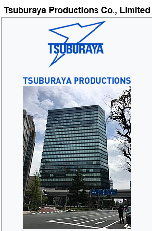

ประวัติและจุดเริ่มต้น
ซีรีส์ Ultraman ถูกสร้างขึ้นโดยบริษัท Tsuburaya Productions ซึ่งก่อตั้งโดย Eiji Tsuburaya หนึ่งในผู้บุกเบิกวงการสร้างภาพยนตร์เอฟเฟ็กต์พิเศษของญี่ปุ่น Eiji Tsuburaya เป็นผู้กำกับเอฟเฟ็กต์พิเศษในภาพยนตร์ Godzilla ที่โด่งดังในปี 1954 หลังจากนั้นเขาได้ก่อตั้งบริษัทของตนเองและเริ่มสร้างซีรีส์ Ultraman โดยได้รับแรงบันดาลใจจากการสร้างสรรค์เรื่องราวที่ไม่เหมือนใคร ย้อนกลับไปในปี 1954 อิชิโระ ฮอนดะ (Inoshiro Honda) ผู้กำกับภาพยนตร์ชาวญี่ปุ่น ได้นำผลงานเรื่องก็อตซิลล่าออกฉายเป็นครั้งแรก และสามารถเรียกเสียงฮือฮาด้วยตัวบทที่มีความซีเรียส สอดแรกประเด็นภัยจากการใช้อาวุธนิวเคลียร์ในสมัยสงครามโลกครั้งที่ 2 ทว่าอีกหนึ่งความสำเร็จต้องยกความดีความชอบให้กับฝ่ายเทคนิคพิเศษที่รังสรรค์ให้สัตว์ประหลาดยักษ์ตนนี้มีชีวิต คล้ายกับว่ามันเคยออกอาละวาดทำลายบ้านมาก่อน Ultraman เริ่มต้นจากซีรีส์ "Ultra Q" ซึ่งเป็นซีรีส์แนวสืบสวนที่เกี่ยวข้องกับสิ่งเหนือธรรมชาติ และต่อมาก็มีการนำเสนอซีรีส์ "Ultraman" ที่มีการต่อสู้กับสัตว์ประหลาดและเอเลี่ยน ซีรีส์นี้ได้รับความนิยมอย่างล้นหลามและกลายเป็นต้นแบบของการสร้างซีรีส์ในแนว Sci-Fi ที่เต็มไปด้วยจินตนาการและความคิดสร้างสรรค์
